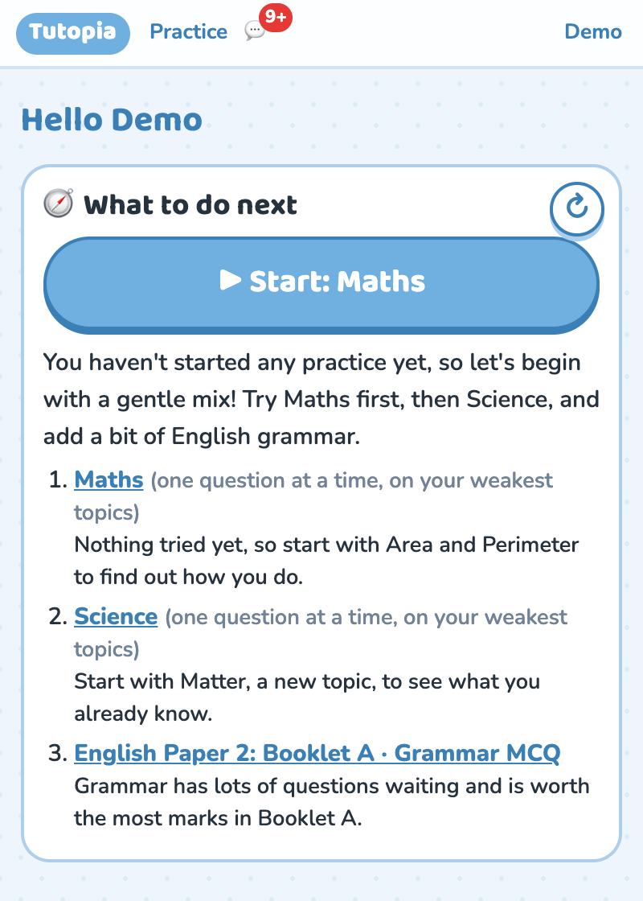
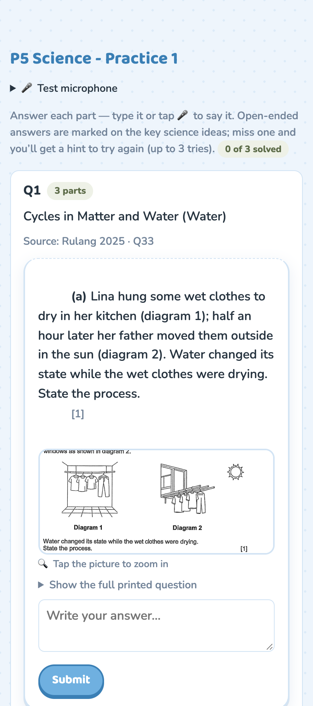
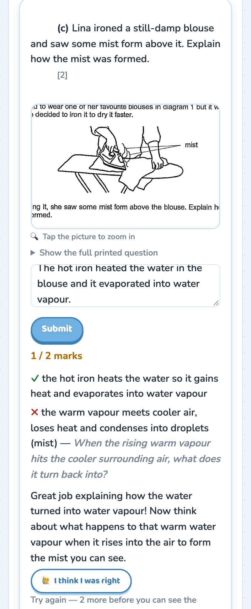
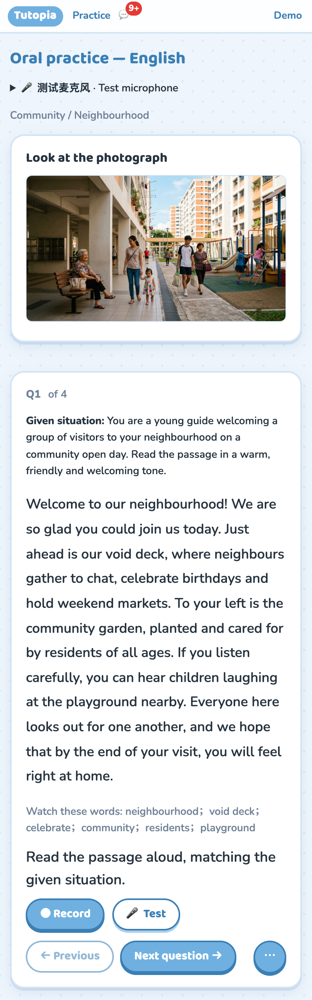
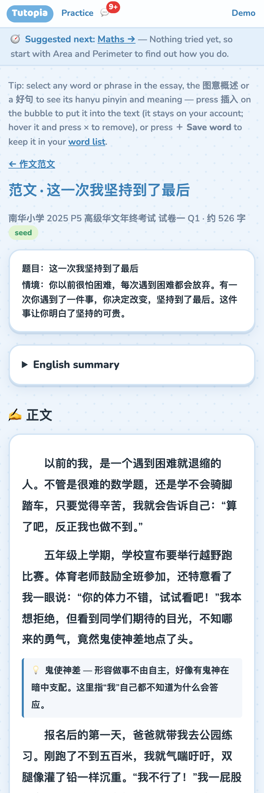

What it does
- Real past-year exam questions in maths, science, English and 华文.
- Answer by typing, speaking, or photographing your working.
- Instant marking with hints and retries, not just the answer.
- Oral practice with spoken feedback, listening comprehension and 听写.
- Composition practice with model essays and a story coach.
- A daily holiday plan (thanks, I hate it).
- Pokémon for first-try right answers. This is the only reason I keep going.
Who did what
Papa: the design, all the building (with Claude Code), the questions and choosing the AI models.
Me: chief tester, very reluctantly. Quite a lot of it came from me using it and complaining. I said graphs were “tough to see”, so now answers get drawn right onto the graph. I caught marking mistakes. I plan my composition stories with the coach. And when my real school marks came back lower, the science marker got stricter. I accept no responsibility for that.
How a question goes through it
Real exam papers go in
Claude CodePapa feeds in past-year school exam papers as PDFs. A Claude Code session reads each one, once, and turns it into a question bank: maths, science, English and 华文, P1 to P5. Scanned and sideways pages were a whole saga.
It picks what I'm worst at
plain database queriesNo AI here, just maths. Questions are picked from my weakest topics, and ones I got wrong come back a few days later. Rude, but effective.

I answer (typing, talking or a photo)
the question pageI can type, speak, or take a photo of my handwritten working. Multiple-choice and fill-in-the-blank are marked by plain code. Anything open-ended goes to an AI marker, along with the paper's real mark scheme.

AI marks it like a strict teacher
Gemini · Qwen · ClaudeIt ticks the points I got and crosses the ones I missed, with a hint instead of the answer, and I get retries. If I think it's wrong I can press “I think I was right”, and a second marker (Claude Opus) looks again. It got stricter after my real school marks came back lower than Tutopia's. Thanks for that.

Oral practice that actually listens
speech in, speech outFor oral I record myself, and the marker hears the recording itself, not just a transcript, so it notices pronunciation, tones in 华文, and every “um”. Then it gives me feedback out loud.

Compositions and model essays
华文 范文 · story coachThere are model essays to learn from, with an English summary you can switch on, and a story coach I use to plan my own composition plots.

Which AI does what (and why)
Papa doesn't use one AI for everything. Each job gets whichever model did it best in tests: Google's Gemini for English and science, Alibaba's Qwen and friends for maths and 华文 because they're strong at Chinese, and Claude for the trickiest calls. Losers got dropped. Google Veo made videos in the wrong language, and one old essay writer was just too slow.
Under the hood
Can I use it?
No. It's private and family only, and the code isn't public. Sorry. (Not that sorry.)